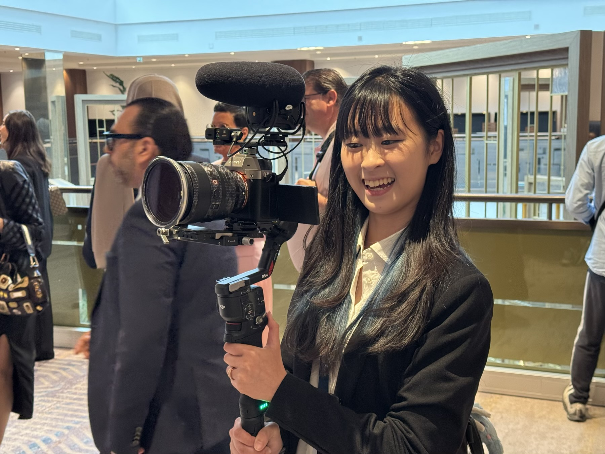
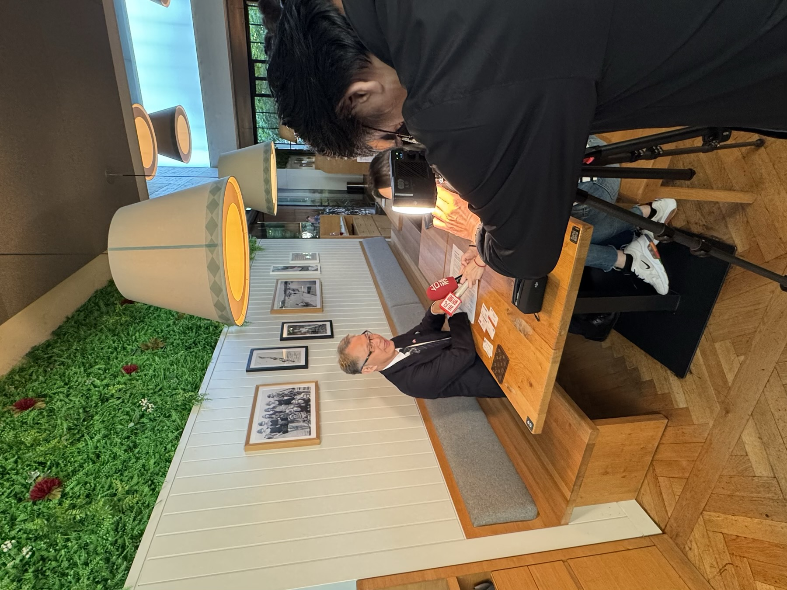

Media Liaison & Liaison Interpreter
76th FIABCI World Congress — Vienna, Austria May 2026 · Freelance- Coordinated schedules and on-site support for Taiwan media delegations at an international congress, working across corporate, government, and press stakeholders.
- Delivered real-time English–Mandarin interpretation and prepared written materials for accurate press coverage.


